Usos de la Consola en JavaScript
La consola se trata de uno de los diversos objetos que podemos encontrar tanto en el navegador como en los intérpretes de JavaScript el cual tiene como objetivo brindar todo tipo de información útil para el desarrollador sobre el estado de la página, desde todo tipo de errores hasta revelar los diferentes datos que se estén manipulando.
La consola de JavaScript se puede encontrar ya en el intérprete de JavaScript, en algunos IDE que lo tengan incluido y principalmente está disponible en los navegadores, en los cuales se puede acceder a este presionando el botón derecho del ratón, y seleccionando la opción llamada "inspeccionar elemento".
De este modo se despliega una nueva pestaña que contiene todas las herramientas de desarrollador, donde en la parte superior se encuentran diversas pestañas, en la cuales la primera de estas permite visualizar los elementos HTML, la pestaña de interés en este apartado es la segunda pestaña, llamada "console", la cual permite ejecutar instrucciones que serán procesadas por el navegador.
Nota: En Google Chrome se abre automáticamente hundiendo el botón "F12".
Nota: Si en las herramientas de desarrollador se selecciona un elemento HTML y en la consola se escribe los caracteres "$0" se mostrarán todas las características del elemento en cuestión.
Funciones del Objeto console
Console.log( )
-
Este método permite imprimir elementos directamente en la consola, los cuales se deben definir en el interior de los paréntesis de su sintaxis.
Ejemplo
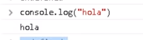
En este ejemplo se empleó la función console.log directamente en la consola del navegador, resultado en que inmediatamente después imprimiera el valor definido en esta.
Funciones de Registro de la Consola
Assert( )
-
esta función detona un mensaje de error en la consola si una afirmación seleccionada es falsa, por otro lado si la afirmación es verdadera no aparecerá nada.
Esta función no pertenece al estándar, tampoco se recomienda su uso, sin embargo es útil conocerla ya que se puede dar el caso de que se pueda encontrar en el código de algún tercero.
Ejemplo
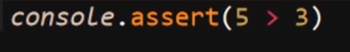
Resultado
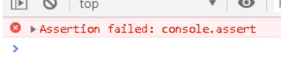
Clear( )
-
Esta función permite limpiar la consola, esto es útil ya que conforme se va usando la consola se satura de datos o comandos e incluso errores que ya han sido manipulados, por ello para poder trabajar con nueva información de forma organizada es necesario limpiar la consola de todos estos datos antiguos.
Ejemplo
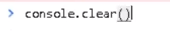
Error( )
-
Esta función permite personalizar un mensaje que se mostrará en consola cuando se dispare un error, en una área establecida del código, es decir esta función permite que se personalice un mensaje de error para algún bloque de código en particular.
Ejemplo
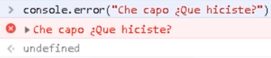
Nota: esta función puede ser usada tanto dentro del código JavaScript como desde la misma consola.
Info( )
-
Esta función se asemeja mucho a ".log()" con la única diferencia de que esta se debería emplear únicamente para imprimir mensajes exclusivamente informativos, realmente esta función se puede emplear de la misma forma que ".log()", ya que la única diferencia en la funcionalidad de ambos es que "info()" se puede mostrar con otros colores en algunos navegadores.
Ejemplo
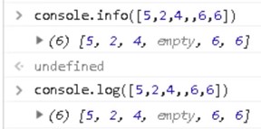
En este ejemplo se puede apreciar que básicamente no existe diferencia entre "console.log" y "console.info", sin embargo ya que "log()" conceptualmente no se limita a solo datos informativos es más usado.
Table( )
-
Esta función toma un argumento obligatorio: data, que debe ser un array o un parámetro adicional, más un parámetro adicional: columns y con esto muestra una tabla en la consola.
Ejemplo
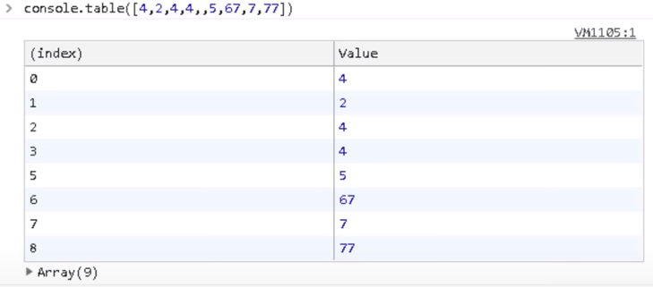
En este ejemplo se puede apreciar una tabla generada en la consola a partir de un array, en esta tabla no se empleó el parámetro adicional (columns), en dicha tabla la columna izquierda revela la posición del elemento mientras que la derecha revela el valor de los datos.
Nota: Si se ingresa un elementos que no sea un objeto o un array esta función se va a comportar como un ".log()".
Warn( )
-
Esta función se asemeja mucho a la función "error()", con la diferencia de que esta no detona un error, sino que en su lugar detona un mensaje de advertencia.
Ejemplo
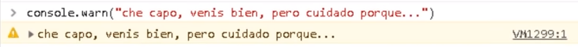
Nota: no se recomienda el uso de esta función ya que está en desuso, sin embargo aún es importante conocerla ya que es muy probable que se encuentre en códigos de terceros.
Dir( )
-
Esta función despliega una lista interactiva de las Propiedades del objeto JavaScript especificado, se asemeja mucho a "info()" pero la forma en la que se plasman los datos es diferente, a la vez que esta función incluye funcionalidades extra.
Ejemplo
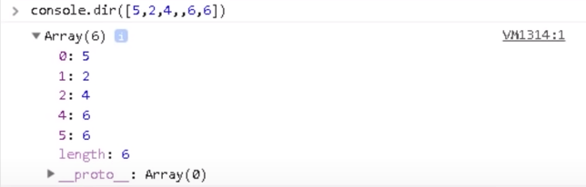
En este ejemplo se muestra el cómo la propiedad "dir()" muestra los datos de un array.
Funciones de Conteo
- Count( ) y CountReset( )
-
Esta función realiza un conteo de las veces que esta ha sido empleada, es decir la función "count()" muestra en consola las veces que ha sido usada, esto es útil a un nivel de funcionalidad para saber el número de veces que ha sido ejecutado un elemento, como por ejemplo una función.
Esta función se usa en conjunto con "countReset()", la cual es una función que permite reiniciar el valor de "count()" a "0", permitiendo empezar con el conteo nuevamente.
Ejemplo
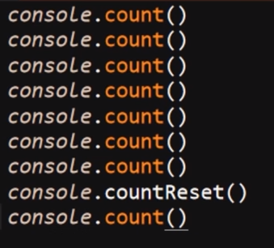
Resultado
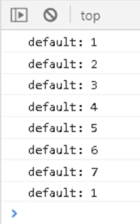
En este ejemplo se muestra el cómo la función cuenta cada uno de sus usos, y el cómo el valor de esta es reiniciado por la propiedad "countReset()".
Funciones de agrupación
Group( ) y GroupEnd( )
-
Esta función permite generar un "grupo" en la consola, es decir permite generar un bloque de comandos retráctil, se asemeja a generar un contenedor para los comandos, esta función se puede anidar generando varios niveles de grupos uno dentro de otro.
Esta función recibe el nombre del grupo ingresándolo dentro de los paréntesis, de no ingresarse ningún nombre genera un grupo sin nombre, al que se le aplicará el nombre de la función "group()" por defecto.
Ejemplo
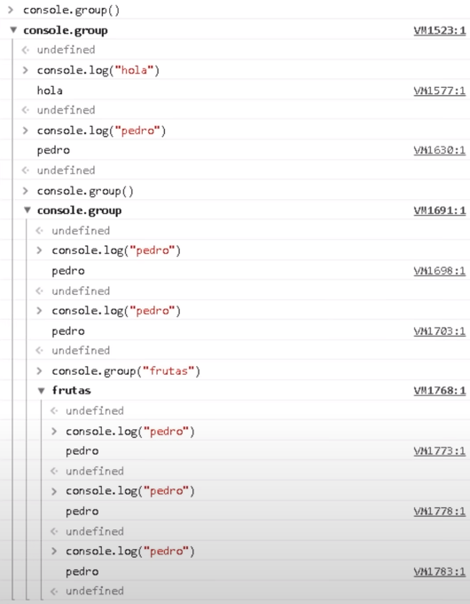
En este ejemplo se puede apreciar el uso de la función "group" ejemplo en el cual se crearon tres niveles de grupos, en los cuales dos no poseen nombre, mientras que el tercer grupo posee el nombre de "fresas."
Por otro lado la función "groupEnd" permite cerrar los grupos, funciona como la etiquetas de cierre de un elemento HTML, al incluirlo al final de un grupo este culminará allí, por lo tanto todo lo que se escriba de allí en adelante pasa a pertenecer al siguiente grupo con mayor nivel, y así hasta cerrar todos los grupos generados, es decir una vez se ingresa esta función al final de un grupo esta lo cerrará impidiendo que se ingresen más datos en el grupo.
Ejemplo
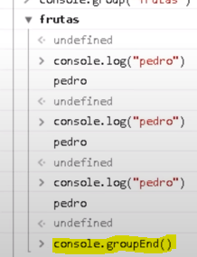
GroupCollapsed( )
-
Esta función es básicamente igual a "group()", con la única diferencia de que esta, al generar el grupo lo generará plegado por defecto, a diferencia de "group()" el cual genera el grupo desplegado.
Ejemplo
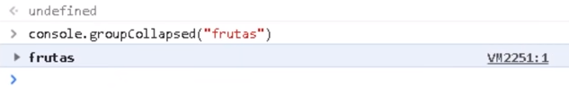
En este ejemplo se aprecia un grupo que acaba de ser generado por "groupCollapsed" con el nombre "frutas" y como se puede ver el grupo se encuentra plegado por defecto.
Funciones de Temporizador
Time( ), TimeEnd( ) y TimeLog( )
-
Estas tres funciones permiten controlar el funcionamiento de un temporizador, cada una con su uso en específico, las tres en conjunto permiten medir el tiempo que tardan en ejecutarse algún código o funcionalidad o incluso medir el tiempo que le toma a algún usuario realizar determinada acción, las funciones y sus usos son:
-
Time( )
Esta función permite inicializar el temporizador, el cual estará corriendo desde el momento en que se ejecute la funcionalidad.
-
TimeLog( )
Esta función permite marcar el temporizador en cierto momento, para de ese modo medir el tiempo que tomó realizar dicha acción, el uso de esta función no detiene el conteo del temporizador por lo que se puede usar las veces que sean necesario, siempre retornando el tiempo transcurrido desde el inicio del temporizador.
Esta función solo puede ser utilizada si el temporizador ya ha sido inicializado por "time()", por lo tanto si el tiempo no ha sido inicializado o ha sido culminado por un "timeEnd()" esta función desencadena un error.
-
TimeEnd( )
Esta función permite culminar el temporizador, al emplearla el tiempo dejará de transcurrir, de ese modo terminando con la actividad, al ejecutarse este comando muestra el tiempo trascurrido en total desde la inicialización del temporizador.
Ejemplo
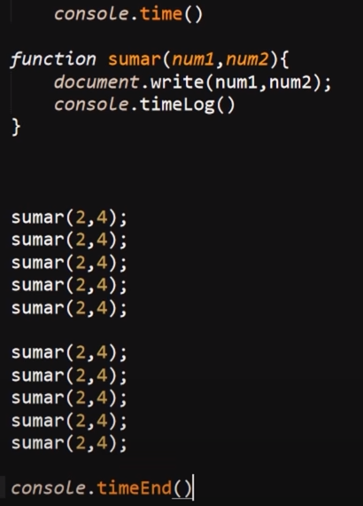
Resultado
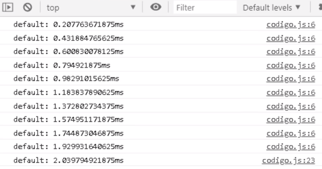
En este ejemplo se puede apreciar el cómo se incorporó un temporizador en una función que imprime datos en pantalla, en el resultado se puede apreciar como con cada ejecución la función "timelog()" marca en la consola el tiempo transcurrido al momento de realizada la función, y como al final la ejecución del temporizador es terminada por la función "timeEnd()".
Cambiar el Texto de la Consola
Es posible aplicar estilos CSS básicos a los textos que se muestran en consola, esto se puede utilizar para resaltar elementos, estructurar varios tipos de resultados, retornos errores, funciones etc.
La forma de aplicar los estilos a un texto es al definir las funciones de visualización en consola ( log(), info() ) se les añade los caracteres porcentaje (%) seguido de "c" justo antes del texto al que se le aplicará el estilo, separado con una coma (,) se añade como si fuese un dato string (entre paréntesis) los estilos CSS, del mismo modo que se aplican estilos en línea en HTML, de este modo se aplicarán estilos CSS básicos al texto mostrado en la consola.
Ejemplo
Resultado
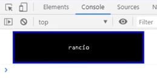
En este ejemplo se puede apreciar el cómo al incluir los caracteres "%c" justo antes del texto, se puede añadir los estilos CSS como una segunda cadena de texto luego de la original, resultado en que los estilos definidos se interpretarán y aplicarán al texto pautado.